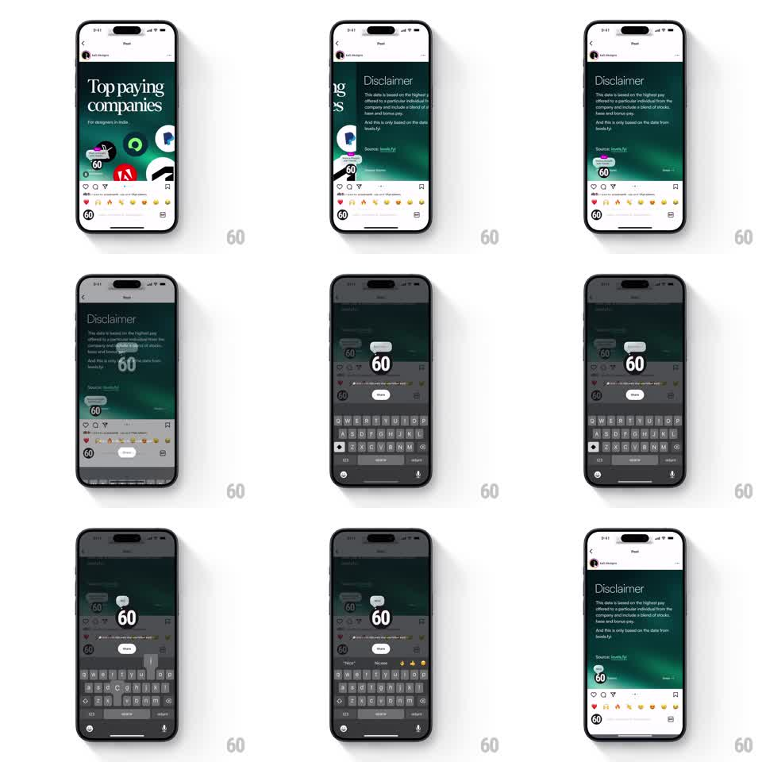

Media
Frame-by-frame

Rebuild this interaction 1:1: Instagram's add-a-note - tapping the note bubble on a post dims the feed and springs a centered note input open with the keyboard; saving pins the typed note bubble onto the post.

Rebuild this interaction 1:1: Instagram's add-a-note - tapping the note bubble on a post dims the feed and springs a centered note input open with the keyboard; saving pins the typed note bubble onto the post.
## Integration
Integration: stack-agnostic spec - springs given as stiffness/damping, timed motions as duration + curve; map every value to your framework and animation library of choice.
## Scene
A feed post ("Top paying companies" graphic) with the author's avatar top-left and a small gray thought-bubble note icon. Tapping it fades the post to ~40% and opens the composer: a white rounded bubble input centered on screen ("Share a thought..." style), a live preview bubble above it, and the keyboard below. Saving shows the note bubble ("Nice") attached near the avatar.
## Motion spec
Pattern: badge-to-input spring expansion.
- Tap the note badge: the post dims (200ms) and the bubble input scales up from the badge's position to center screen (spring stiffness ~320, damping ~22) - it visibly grows out of the badge.
- The keyboard rises with the system animation; the input tracks it, keeping ~40px clearance.
- Typing mirrors into the preview bubble above the field in real time.
- Save: the composer scales down and fades (200ms) while the note bubble springs onto the post at its anchor point (stiffness ~400, damping ~20, small overshoot).
- Cancel or tap outside reverses the open animation back into the badge.
## Calibration
- The origin matters: the input must expand from the badge, not appear from screen center.
- One spring for the whole open; chaining scale-then-fade loses the pop.
## Reduced motion
Fade the composer in centered; no origin-based expansion.
## Don't miss
- The note bubble on the post is small, white, and rounded with a pointer tail toward the avatar - not a full-width banner.
- The dimmed post stays non-interactive under the composer.